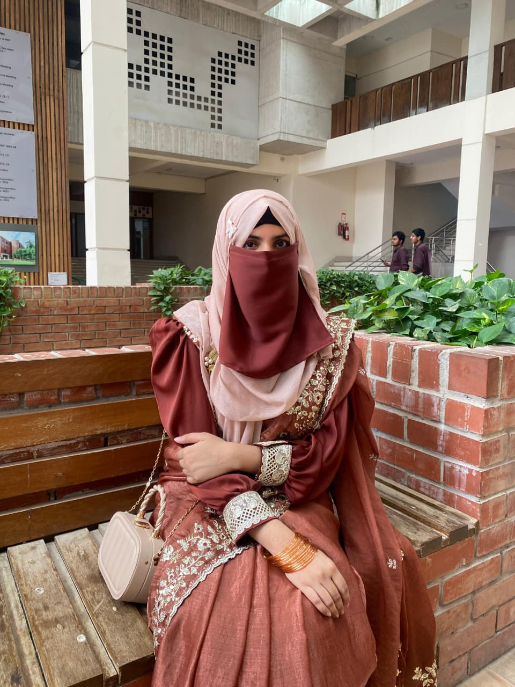

Tumor Detection by Image Segmentation Using an Active Contour Model
An active contour (snake) model for segmenting biomedical images, covering boundary detection, parameter tuning and extraction of the tumor region.
See the related projectBiomedical engineer and research assistant at MIST, Dhaka
I work across molecular biology, bioinformatics, biomedical instrumentation, prosthetics and robotics, building interdisciplinary engineering solutions that bridge medicine and technology for better diagnosis, rehabilitation and patient care.

I am a Biomedical Engineering graduate from Military Institute of Science and Technology (MIST) with a strong interest in biomedical instrumentation, prosthetics, robotics, and healthcare technology.
I have hands-on experience working on research and engineering projects involving EMG-controlled prosthetic systems, embedded systems, biomedical signal processing, web development, and both wet lab and dry lab research methodologies.
I am currently working as a Research Assistant at MIST, developing a microfluidic immunoassay for the quantitative detection of anti-dsDNA antibodies in patients with Systemic Lupus Erythematosus (SLE).
I am passionate about applying engineering principles to develop innovative healthcare solutions and continuously improving my technical and research skills to bridge medicine and technology.
Manuscripts currently in peer review or being written up.
An active contour (snake) model for segmenting biomedical images, covering boundary detection, parameter tuning and extraction of the tumor region.
See the related projectA gelatin-based soft robotic system made from edible, biodegradable materials, with pneumatic actuation and self-oscillating motion driven by an acid-base reaction.
See the related projectA lab-on-a-chip immunoassay for anti-dsDNA autoantibodies, a key biomarker for SLE, combining microfluidic device design, CFD simulation and computational binding analysis.
See the related projectThesis and project work. Open a card for details and figures.
This thesis focuses on the design and development of a low-cost, anthropomorphic prosthetic hand that combines EMG signal control with tactile feedback. The system is designed to be affordable and accessible for amputees in developing countries.
Key contributions
Designing and simulating a microfluidic biosensor for detection of anti-dsDNA autoantibodies, a key biomarker for Systemic Lupus Erythematosus (SLE). Implementing computational analysis for therapeutic screening and binding affinity prediction.
Role: Research Assistant (RA), Department of Biomedical Engineering, Military Institute of Science and Technology (MIST).
Overview: Development of a lab-on-a-chip immunoassay platform for rapid, quantitative measurement of anti-double-stranded DNA (anti-dsDNA) autoantibodies, a clinically established diagnostic and disease-activity biomarker for Systemic Lupus Erythematosus. The work combines microfluidic device design, computational fluid dynamics, surface-immobilisation chemistry and in silico therapeutic screening.
Key highlights
Web-based rehabilitation tracking system using AI for real-time pose, hand and face feedback. Computer vision and MediaPipe algorithms monitor patient exercise form for remote physiotherapy.
Duration: 2025–2026
Overview: Developed a web-based rehabilitation tracking system using AI for real-time pose, hand and face feedback. Implemented computer vision and MediaPipe algorithms to monitor patient exercise form, designed for remote physiotherapy applications to improve patient adherence and outcomes.
Key highlights
Live demo: rehab-exercise-tracker.netlify.app
Soft robotic system using edible and biodegradable materials for sustainable biomedical applications. Pneumatic actuation with self-oscillating acid-base reactions.
Overview: Explores soft robotic systems using edible and biodegradable materials. The goal is to create sustainable, temporary biomedical devices that can be safely consumed or degraded after use.
Key highlights
Glucose estimation using optical PPG signals with ML model for improved accuracy. Real-time prediction on embedded system.
Overview: Non-invasive glucose monitoring system using optical PPG signals. Combines signal processing, machine learning, and embedded systems for real-time prediction.
Key highlights
Active contour (snake model) for biomedical image segmentation. Boundary detection and region extraction with parameter tuning.
Overview: Active contour (snake model) algorithm for biomedical image segmentation to detect tumor boundaries in medical images.
Key highlights
Dual-mode prosthetic arm with EMG gesture recognition and web-based remote control. ESP32-based real-time actuation.
Overview: Dual-mode prosthetic robotic arm controlled via EMG signals and a web-based remote interface. Uses ESP32 for real-time control and actuation.
Key highlights
PDMS-based microfluidic device for studying fluid flow and drug transport across membrane barriers. Soft lithography fabrication.
Overview: Designed and fabricated a PDMS microfluidic lab-on-chip platform via soft lithography to simulate blood/plasma flow and drug diffusion in microchannels.
Key highlights
In silico screening and molecular docking to identify potential drug targets in HTLV-1. Binding affinity analysis for antiviral discovery.
Overview: Computational identification of potential drug targets in HTLV-1 using bioinformatics screening, molecular docking, and dynamics simulations.
Key highlights
Interfaces built for biomedical systems and institutional platforms.
AI-powered rehabilitation tracker with real-time pose, hand and face feedback using MediaPipe.
Open siteOfficial website for the Biomedical Engineering club at MIST.
Open siteWeb interface for real-time remote control of prosthetic arm.
Demo login: sanzida / 49
Open siteWeb-based visualization for non-invasive glucose monitoring system.
Open siteWeb-based calibration tool for personalized EMG threshold adjustment.
Open siteRestaurant menu and food blog interface with focus on UI/UX design.
Open siteWorking on a microfluidic immunoassay for quantitative detection of anti-dsDNA antibodies in patients with Systemic Lupus Erythematosus (SLE). Designing and simulating the microfluidic biosensor and implementing computational analysis for therapeutic screening and binding affinity prediction.
Participated in biomedical engineering and technical support activities. Gained experience in medical device systems and healthcare technology environments.
Observed and assisted in biomedical and clinical operational activities. Gained practical exposure to medical equipment handling and hospital-based healthcare systems.
Participated in science and research-oriented activities related to soil sample analysis.
Led the executive team and organized "Celestra '26", a biomedical-focused event promoting innovation and collaboration.
Managed and maintained the official website, ensuring timely updates and technical functionality.
Developed promotional materials, event branding, and visual communication strategies for club events.
Assisted in web application development, coding, testing, and deployment of club projects.
Provided technical guidance, troubleshooting support, and project milestone tracking.
Achieved Blue Belt in Judo and Karate. Secured 2 Silver Medals in National Jujutsu Championships.
Let's connect and collaborate on healthcare innovation.
3rd Floor, Tower-4, MIST, Mirpur Cantonment, Dhaka-1216, Bangladesh